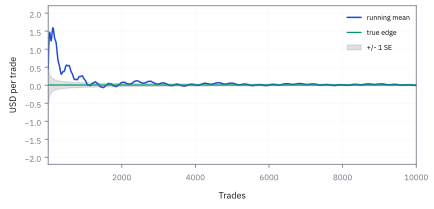
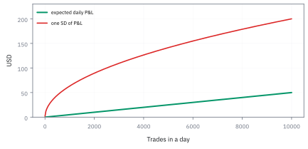
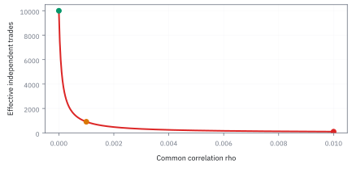

14.1 The Replicating Portfolio and the Black–Scholes Partial Differential Equation (PDE)
ราคาของ option คือเงินที่ต้องใช้สร้างมันขึ้นมาเองด้วยหุ้นกับเงินกู้ ไม่ใช่การเดาว่าหุ้นจะขึ้นหรือลง
คุณขาย European call 100 สัญญา สัญญาละ 100 หุ้น รวม 10,000 หุ้น บนหุ้นราคา \$100 strike \$105 อายุ 3 เดือน (0.25 ปี) ดอกเบี้ย 4% ต่อปี ความผันผวน 20% ต่อปี และรับ premium มา \$23,909 หรือ \$2.3909 ต่อหุ้น เทรดเดอร์ฝึกหัดเสนอสองทาง: ซื้อหุ้นมาถือให้ครบ 10,000 หุ้นเผื่อโดนใช้สิทธิ์ หรือไม่ซื้อเลยเพราะวันนี้หุ้นยังต่ำกว่า strike ถ้าพรุ่งนี้หุ้นขยับ \$1 แต่ละทางเสี่ยงเท่าไร และควรถือกี่หุ้น
ลองตอบก่อนเปิดเฉลย
ผิดทั้งสองทาง ถือครบ 10,000 หุ้นแล้วหุ้นลง \$1 จะเสียจากหุ้น \$10,000 แต่ได้คืนจาก call ที่ขายไว้เพียงราว \$3,677 ขาดทุนสุทธิราว \$6,323 ส่วนไม่ถือเลยแล้วหุ้นขึ้น \$1 จะขาดทุนจาก call ราว \$3,677 จำนวนที่ทำให้การขยับเล็ก ๆ หักล้างกันพอดีคือ 3,677 หุ้น มูลค่า \$367,719 โดยกู้เงินมา \$343,810 แล้วใช้ premium อีก \$23,909 หน้านี้สร้างตัวเลขนี้ขึ้นมาเอง และแสดงว่ามันไม่ขึ้นกับว่าใครเชื่อว่าหุ้นจะขึ้นหรือลง
ภาพรวมก่อนลงสูตร
วิธีที่ดูเป็นธรรมชาติที่สุดในการตั้งราคา call คือเอา payoff ในอนาคตมาเฉลี่ยด้วยโอกาสจริงแล้วคิดลดกลับมา แต่ “โอกาสจริง” เป็นของใคร คนที่มองหุ้นขึ้นกับคนที่มองหุ้นลงจะได้ราคาต่างกัน และต่อให้ตกลงโอกาสกันได้ ก็ยังต้องตกลงว่าแต่ละคนกลัวความเสี่ยงแค่ไหนอีก ทางนี้จึงไม่ได้ราคาเดียว
ทางที่ได้ราคาเดียวคือถามคำถามใหม่: ถ้าไม่ซื้อ call แต่สร้างมันเองด้วยหุ้นจำนวนหนึ่งกับเงินสด (บวกคือฝาก ลบคือกู้) ต้องใช้เงินเท่าไร ถ้าพอร์ตนี้ให้เงินเท่ากับ call ทุกกรณี ราคา call ต้องเท่ากับต้นทุนของพอร์ต ไม่อย่างนั้นจะมีคนขายของแพงซื้อของถูกแล้วได้เงินฟรี พอร์ตนี้ชื่อ replicating portfolio
รูปด้านล่างคือทั้งหน้าในภาพเดียว ราคา call ก่อนหมดอายุเป็นเส้นโค้ง ส่วนพอร์ตหุ้นกับเงินสดเป็นเส้นตรงเสมอ เราจึงเลียนแบบได้แค่ทีละจุด โดยเลือกเส้นตรงที่แตะเส้นโค้งตรงราคาวันนี้ แล้วเปลี่ยนเส้นตรงทุกครั้งที่หุ้นขยับ หน้านี้จะทำด้วยมือในโลกที่หุ้นมีสองราคา ต่อเป็นต้นไม้หลายงวด แล้วทำในเวลาต่อเนื่องจนได้ Black–Scholes PDE จากนั้นอ่าน PDE เป็นงบรายวันของโต๊ะ และจำลองการ hedge จริงเพื่อดูว่าเหลือความเสี่ยงเท่าไร
รูป — เส้นโค้งของ call กับเส้นตรงของพอร์ตเลียนแบบ
ศัพท์ที่ใช้ในหัวข้อนี้
- European call
- สิทธิ์ (ไม่ใช่หน้าที่) ซื้อหุ้นที่ราคา strike $K$ ได้เฉพาะวันหมดอายุ $T$ ผู้ถือได้เงิน $\max(S_T-K,0)$ ในวันนั้น ส่วน put คือสิทธิ์ขาย ได้ $\max(K-S_T,0)$ ถ้าใช้สิทธิ์ได้ทุกวันก่อนหมดอายุเรียก American option
- Replicating portfolio
- พอร์ตหุ้นกับเงินสดที่ให้มูลค่าเท่ากับ option ทุกกรณี ใช้เปลี่ยนคำถาม “option ควรราคาเท่าไร” ซึ่งต้องเดาอนาคต เป็น “สร้างมันเองต้องใช้เงินเท่าไร” ซึ่งตอบได้จากราคาที่เห็นวันนี้
- Self-financing
- กติกาว่าหลังตั้งพอร์ตแล้วห้ามเติมหรือถอนเงิน ซื้อหุ้นเพิ่มต้องใช้เงินสดในพอร์ตเอง มูลค่าพอร์ตก่อนซื้อขายจึงเท่ากับหลังซื้อขายเสมอ ถ้าไม่มีกติกานี้ พอร์ตไหนก็ “เลียนแบบ” อะไรก็ได้ด้วยการแอบเติมเงิน
- Delta ($\Delta$)
- จำนวนหุ้นต่อ option หนึ่งใบที่ทำให้การขยับของพอร์ตกับของ option หักล้างกันพอดี หน้านี้จะได้ว่ามันเท่ากับความชันของราคา call เทียบราคาหุ้น การถือหุ้นตามจำนวนนี้แล้วปรับไปเรื่อย ๆ เรียก delta hedge
- Arbitrage
- รายการที่ได้เงินฟรีโดยไม่มีทางขาดทุน มีสองแบบ: แบบแรกได้เงินทันทีวันนี้และอนาคตไม่ติดลบ แบบที่สองไม่ใช้เงินวันนี้ อนาคตไม่ติดลบ และมีโอกาสเป็นบวก เราใช้มันพิสูจน์ราคา: ถ้าราคาไม่ตรงกับต้นทุนการสร้างซ้ำ จะมีรายการแบบนี้ ราคาจึงต้องตรง
- PDE และเงื่อนไขปลายทาง
- สมการที่ผูกอัตราเปลี่ยนตามเวลา ความชัน และความโค้งของราคา option เข้าด้วยกัน สมการอย่างเดียวมีคำตอบได้มาก ต้องบอกด้วยว่าวันหมดอายุราคาเท่ากับ payoff จึงได้ราคาเดียว
สัญลักษณ์และหน่วย
| สัญลักษณ์ | ความหมาย | หน่วย |
|---|---|---|
| $S,\ S_t$ | ราคาหุ้น ณ เวลา $t$ | ดอลลาร์ต่อหุ้น |
| $K,\ T,\ t$ | strike, วันหมดอายุ และเวลาปัจจุบัน | ดอลลาร์, ปี, ปี |
| $u,\ d,\ R$ | ตัวคูณราคาตอนหุ้นขึ้นและลงในหนึ่งงวด และตัวคูณเงินฝากหนึ่งงวด | ไม่มีหน่วย |
| $r,\ \mu,\ \sigma$ | ดอกเบี้ยต่อเนื่อง, drift ของหุ้น และความผันผวน | ต่อปี, ต่อปี, ต่อรากที่สองของปี |
| $W_t$ | Brownian motion ตัวเดียวที่ขับหุ้น | รากที่สองของปี |
| $C(S,t)$ | ราคา call ต่อหุ้นอ้างอิงหนึ่งหุ้น | ดอลลาร์ |
| $C_t,\ C_S,\ C_{SS}$ | อัตราเปลี่ยนตามเวลา ความชัน และความโค้งของ $C$ | ดอลลาร์ต่อปี, ไม่มีหน่วย, ต่อดอลลาร์ |
| $\Delta,\ B,\ V$ | จำนวนหุ้นต่อ call, เงินสดในพอร์ต (ติดลบคือกู้) และมูลค่าพอร์ต | หุ้น, ดอลลาร์, ดอลลาร์ |
| $h$ | ความยาวหนึ่งก้าวเวลา หนึ่งวันปฏิทินคือ $1/365$ ปี | ปี |
ขั้นที่ 1 — ลองด้วยมือ: หุ้นพรุ่งนี้มีได้แค่สองราคา
โจทย์ให้อะไรมาบ้าง: หุ้นสองตัวราคาวันนี้ \$100 เท่ากัน พรุ่งนี้เป็นได้แค่ \$110 หรือ \$90 หุ้น ABC ขึ้นด้วยโอกาส 99% หุ้น XYZ ขึ้นด้วยโอกาสแค่ 1% call strike \$105 หมดอายุพรุ่งนี้ ดอกเบี้ยข้ามคืนถือเป็นศูนย์ ($R=1$) หาจำนวนหุ้น $\Delta$ กับเงินสด $B$ ที่ทำให้พอร์ตจ่ายเท่ากับ call ทั้งสองทาง แล้วตอบว่า call บน ABC กับบน XYZ ควรราคาต่างกันเท่าไร
สองสมการแรกคือ “พอร์ตต้องจ่ายเท่า call ในโลกขาขึ้น” และ “ในโลกขาลง” เอาสมการบนลบสมการล่างแล้วเงินสดหายไป เหลือแค่ส่วนต่างราคาหุ้น \$20 คูณจำนวนหุ้น ต้องเท่ากับส่วนต่าง payoff \$5 จำนวนหุ้นจึงเป็นอัตราส่วนของสองส่วนต่างนี้
คำตอบ: ถือหุ้น 0.25 หุ้นและกู้ \$22.5 พอร์ตนี้ใช้เงิน \$2.5 และจ่าย \$5 หรือ \$0 ตรงกับ call ทุกกรณี ราคา call จึงเป็น \$2.5 ทั้งบน ABC และ XYZ ไม่ใช่ $0.99(5)=\$4.95$ หรือ $0.01(5)=\$0.05$ ที่ได้จากการเฉลี่ย payoff ด้วยโอกาสจริง ถ้ามีคนยอมซื้อ call บน ABC ที่ \$4.95 เราขายให้ ใช้ \$2.5 สร้างพอร์ตเลียนแบบ แล้วเก็บ \$2.45 ทันที พรุ่งนี้พอร์ตจ่ายภาระของ call ได้พอดีไม่ว่าหุ้นไปทางไหน
ตรวจเองใน 10 วินาที: $110(0.25)-22.5=5$ และ $90(0.25)-22.5=0$ โอกาส 99% หรือ 1% ไม่อยู่ในสมการเลย ส่วนตัวเลข $q=0.5$ ที่ทำให้ $100=q(110)+(1-q)(90)$ ให้ $0.5(5)=2.5$ พอดี ตัวเลขนี้คือ “โอกาสแบบ risk-neutral” ที่ทำให้หุ้นโตเฉลี่ยเท่าดอกเบี้ย
รูป — ต้นไม้หนึ่งงวด: พอร์ตเลียนแบบจ่ายเท่า call ทั้งสองทาง
ขั้นที่ 2 — หลายงวด: ไล่ถอยหลังบนต้นไม้แล้วปรับพอร์ตทุกโหนด
โจทย์ให้อะไรมาบ้าง: หุ้น \$100 ทุกงวดขึ้นเป็น $u=1.07$ เท่าหรือลงเป็น $d=1/1.07$ เท่า เงินฝากหนึ่งงวดโตเป็น $R=1.01$ เท่า call strike \$100 หมดอายุหลังสามงวด หาราคาวันนี้และพอร์ตเลียนแบบทุกโหนด
ต้นไม้สามงวดคือต้นไม้หนึ่งงวดหลายต้นต่อกัน เราจึงเริ่มจากปลายทางที่รู้ payoff แล้วใช้สูตรหนึ่งงวดถอยหลังทีละชั้น ที่แต่ละโหนด จำนวนหุ้นคือส่วนต่างมูลค่าลูกสองโหนดหารด้วยส่วนต่างราคาหุ้น และมูลค่าโหนดคือค่าเฉลี่ยของลูกด้วยน้ำหนัก $q$ แล้วหารด้วย $R$
สูตร $q$ มาจากการแก้สมการสองทางแบบโลกสองราคาในรูปทั่วไป: แทน \$110 และ \$90 ด้วย $uS$ และ $dS$ แทนการคูณ 1 ด้วยการคูณ $R$ แล้วจัดผลให้อยู่ในรูปค่าเฉลี่ยถ่วงน้ำหนัก $q$ จะอยู่ระหว่าง 0 กับ 1 ก็ต่อเมื่อ $d\lt R\lt u$ ถ้า $R\gt u$ ทุกคนจะ short หุ้นแล้วฝากเงิน ถ้า $R\lt d$ ทุกคนจะกู้เงินซื้อหุ้น ได้เงินฟรีทั้งสองกรณี
คำตอบ: call ราคา \$6.57 วันนี้พอร์ตถือหุ้น 0.598 หุ้นและกู้ \$53.25 จากนั้นทุกงวดต้องปรับตามต้นไม้ด้านล่าง ลองเดินตามเส้นสีเขียว ขึ้น ลง ขึ้น:
| งวด | ราคาหุ้น | มูลค่าพอร์ตก่อนปรับ | ปรับเป็น (หุ้น, เงินสด) | ราคา call ที่โหนด |
|---|---|---|---|---|
| 0 | 100 | — | 0.5982, −53.2457 | 6.5744 |
| 1 | 107 | $0.5982(107)-53.2457(1.01)=10.2293$ | 0.8019, −75.5785 | 10.2293 |
| 2 | 100 | $0.8019(100)-75.5785(1.01)=3.8600$ | 0.5169, −47.8309 | 3.8600 |
| 3 | 107 | $0.5169(107)-47.8309(1.01)=7.0000$ | — | 7 = payoff |
ตัวเลขในตารางคำนวณจากจำนวนหุ้นเต็มความละเอียด ถ้าคูณจากค่าที่ปัดสี่ตำแหน่งเองอาจต่างกันในหลักท้าย
ตรวจเองใน 10 วินาที: ในแถวงวดที่ 1 พอร์ตเก่ามีค่า \$10.23 ก่อนปรับ พอซื้อหุ้นเพิ่ม $0.8019-0.5982=0.2037$ หุ้นด้วยเงิน $0.2037(107)=\$21.80$ เงินสดลดจาก −53.78 เป็น −75.58 พอดี มูลค่ารวมยังเป็น \$10.23 ไม่มีการเติมเงินเลย นี่คือ self-financing ในตัวเลขจริง และโหนดล่างสุดของงวดที่ 2 ถือหุ้นศูนย์ เพราะจากตรงนั้น call หมดค่าทุกทาง
รูป — ต้นไม้สามงวด: ราคาหุ้น ราคา call และจำนวนหุ้นที่ต้องถือ
รูป — ขาหุ้นกับขาเงินสดตามเส้นทางขึ้น ลง ขึ้น
ขั้นที่ 3 — โลกต่อเนื่อง: ส่งการขยับของหุ้นผ่านราคา call
ถ้าซอยงวดให้สั้นลงเรื่อย ๆ โดยตั้ง $u=e^{\sigma\sqrt{h}}$ และ $d=1/u$ ต้นไม้จะกลายเป็น geometric Brownian motion เราจึงทำเรื่องเดิมในเวลาต่อเนื่อง ของที่ต้องใช้มีสองอย่าง: หุ้นมี $dW$ อยู่ก้อนเดียว และกำลังสองของการขยับไม่เล็กจนทิ้งได้ ราคา call เป็น function ของราคาหุ้นกับเวลา จึงใช้ Itô's lemma คือกระจาย Taylor ถึงอันดับสองในราคาหุ้น
กฎ $(dW)^2=dt$ มาจากขนาดของ $dW$ ซึ่งโตตาม $\sqrt{dt}$ กำลังสองของมันจึงมีขนาด $dt$ เท่ากับพจน์ drift ทิ้งไม่ได้ ส่วน $(dt)^2$ กับ $dt\,dW$ เล็กกว่า $dt$ มากเมื่อก้าวสั้นลงจึงทิ้งได้ (ผลรวมกำลังสองของการขยับเท่ากับเวลาที่ผ่านไป ซึ่งเรียกว่า quadratic variation) ตัวเลขตรวจได้: ในหนึ่งวันปฏิทิน การขยับปกติของหุ้น \$100 คือ $\sigma S\sqrt{1/365}=20(0.052342)=\$1.0468$ และ $1.0468^2=1.0959=0.04(10{,}000)/365$ ทิศสุ่ม แต่ขนาดของกำลังสองรู้ล่วงหน้า
บรรทัดสุดท้ายจัดการขยับของ call เป็นสองก้อน: ก้อนคูณ $dt$ ซึ่งรู้ล่วงหน้า และก้อนคูณ $dW$ ซึ่งสุ่ม พจน์ความโค้ง $\tfrac12\sigma^2S^2C_{SS}$ ที่ calculus ปกติไม่มีจะกลายเป็นหัวใจของ PDE
ขั้นที่ 4 — บัญชีของพอร์ตที่ห้ามเติมเงิน
ก่อนจับคู่พอร์ตกับ call ต้องรู้ก่อนว่ามูลค่าพอร์ตขยับอย่างไร ต้นไม้สามงวดด้านบนให้คำตอบแบบไม่ต่อเนื่องแล้ว: ระหว่างงวดถือจำนวนหุ้นคงที่ เงินเปลี่ยนเพราะหุ้นขยับกับดอกเบี้ยเท่านั้น และตอนปรับ ขาหุ้นเพิ่มเท่าไรเงินสดลดเท่านั้น เขียนเป็นสูตรได้แบบนี้
บรรทัดกลางคือบัญชีจริงหนึ่งก้าว: กำไรจากหุ้นที่ถือ บวกดอกเบี้ยของเงินสดที่เหลือ $V_i-\Delta_iS_i=B_i$ ไม่มีช่องให้เติมหรือถอนเงิน ให้ $h$ สั้นลงแล้ว $e^{rh}-1\approx rh$ ได้บรรทัดสุดท้าย
จุดที่คนพลาดบ่อย: เขียน $d(\Delta S)=\Delta\,dS+S\,d\Delta$ แล้วนับ $S\,d\Delta$ เป็นกำไรขาดทุน แต่ $S\,d\Delta$ คือเงินที่จ่ายซื้อหุ้นเพิ่ม เงินสดลดลงเท่ากันพอดี เหมือนตอนซื้อหุ้นเพิ่ม 0.204 หุ้นในต้นไม้ที่มูลค่ารวมไม่ขยับเลย
ขั้นที่ 5 — เลือกจำนวนหุ้นให้ส่วนสุ่มหักล้างกัน
ตอนนี้มีสองสิ่งที่ขับด้วย $dW$ ก้อนเดียวกัน คือ call กับพอร์ต ถ้าตัวคูณของ $dW$ เท่ากัน ส่วนต่างของสองสิ่งจะไม่เหลือความสุ่มเลย นี่คือเวอร์ชันต่อเนื่องของ “เอาสมการขาขึ้นลบสมการขาลง” ในโลกสองราคา
บรรทัดที่สามคือหัวใจ: จำนวนหุ้นไม่ได้ถูกตั้งขึ้นลอย ๆ มันคือคำตอบของสมการที่บังคับให้ความสุ่มสองฝั่งเท่ากัน ตัด $\sigma S$ ซึ่งเป็นบวกออกทั้งสองข้าง ได้ว่าจำนวนหุ้นเท่ากับความชันของราคา call ในโลกสองราคาเราได้ $\Delta=(C_{\rm up}-C_{\rm down})/(S_{\rm up}-S_{\rm down})$ ซึ่งคือความชันแบบผลต่าง พอก้าวสั้นลง ผลต่างกลายเป็นอนุพันธ์
บรรทัดสุดท้ายบอกเงินสดที่ต้องมีเพื่อให้พอร์ตเริ่มที่มูลค่าเท่า call สำหรับ call ค่านี้ติดลบเสมอเพราะ $SC_S$ มากกว่า $C$ แปลว่าต้องกู้เงินมาซื้อหุ้น ตรงกับเงินกู้ \$22.5 ในโลกสองราคาและ \$53.25 ในต้นไม้
ขั้นที่ 6 — เทียบส่วนที่รู้ล่วงหน้า แล้ว μ ก็หายไป
หลังเลือก $\Delta=C_S$ ส่วนต่าง $C-V$ เริ่มที่ศูนย์และไม่มีความสุ่มเหลือ ของที่รู้ผลล่วงหน้าต้องโตเท่าดอกเบี้ย ซึ่งสำหรับของที่มีค่าศูนย์คือไม่โตเลย ไม่อย่างนั้นคนจะยืมเงินมาทำกำไรฟรี ก้อนคูณ $dt$ ของ call กับของพอร์ตจึงต้องเท่ากัน
ฝั่งซ้ายมาจากการขยับของ call ด้วย Itô ฝั่งขวามาจากบัญชีพอร์ต แล้วแทน $\Delta=C_S$ กับ $B=C-SC_S$ พจน์ $\mu SC_S$ อยู่ทั้งสองฝั่งพอดีจึงตัดกันทิ้ง อัตราโตที่คาดของหุ้นหายไปจากสมการ บรรทัดสุดท้ายคือ Black–Scholes PDE
มันหายเพราะหุ้นที่ถือไว้ hedge พาทั้งความสุ่มและ drift ของหุ้นมาด้วยกัน หักความสุ่มจนหมดก็หัก drift ไปพร้อมกัน นี่คือเหตุผลเดียวกับที่โอกาส 99% หรือ 1% ของ ABC และ XYZ ไม่มีผลในโลกสองราคา สิ่งที่ไม่หายคือ $\sigma$ เพราะมันมาจากกำลังสองของการขยับ ซึ่งเป็นบวกเสมอไม่ว่าหุ้นไปทางไหน หุ้นที่ถือเป็นเส้นตรงจึงหักทิ้งไม่ได้ ราคา option จึงเป็นราคาของความผันผวน ไม่ใช่ราคาของทิศทาง
PDE นี้ใช้ได้กับทุกสัญญาที่ขึ้นกับหุ้นตัวนี้และเวลา เพราะการ derive ไม่ได้ใช้ payoff เลย put ก็ผ่าน PDE เดียวกัน ต่างกันแค่เงื่อนไขปลายทาง หุ้นเองก็ผ่าน: แทน $V=S$ ได้ $0+rS+0-rS=0$
ขั้นที่ 7 — ปิดโจทย์ด้วย payoff แล้วแก้ PDE บนกริดโดยไม่ใช้สูตร
โจทย์ให้อะไรมาบ้าง: PDE ที่เพิ่งได้ กับเงื่อนไขว่าวันหมดอายุราคาเท่ากับ payoff ที่หุ้นศูนย์ call เป็นศูนย์ และเมื่อหุ้นสูงมาก call ใกล้ $S-Ke^{-r(T-t)}$ เราแทนอนุพันธ์ด้วยผลต่างบนกริดราคาห่างกัน $\delta$ แล้วเดินถอยหลังจากวันหมดอายุครั้งละ $h$ ปี เหมือนไล่ถอยหลังบนต้นไม้ (วิธีนี้ชื่อ explicit finite difference)
ก้าวแรกที่ $S=105$: ค่าก่อนหน้าคือ payoff $C_{104}=0,\ C_{105}=0,\ C_{106}=1$ ความโค้งแบบผลต่างจึงเป็น $(1-0+0)/1=1$ ความชันแบบผลต่างเป็น $(1-0)/2=0.5$ ส่วนตัวคูณคือ $\tfrac12\sigma^2S^2=0.02(11{,}025)=220.5$ และ $rS=4.2$ ทำต่อทุกจุดทุกก้าวจนถึงวันนี้ได้ตารางนี้
| $\delta$ (ดอลลาร์) | จำนวนก้าว | ราคาที่ $S=100$ | ห่างจาก \$2.390877 |
|---|---|---|---|
| 1 | 2,000 | 2.387011 | −0.003866 |
| 0.5 | 8,000 | 2.389911 | −0.000966 |
| 0.25 | 32,000 | 2.390636 | −0.000241 |
คำตอบ: PDE กับ payoff อย่างเดียวให้ราคาเข้าหา \$2.3909 ต่อหุ้น เท่ากับ premium ในโจทย์เปิดเรื่อง และเท่ากับ สูตร Black–Scholes ที่หน้าถัดไปจะ derive ความชันของกริดที่ $\delta=0.25$ คือ 0.36771 ใกล้ $\Delta=0.367719$ ก้าวแรกบอกเรื่องสำคัญ: 220.5 จาก 222.6 ส่วนมาจากพจน์ความโค้ง ค่าเวลาของ option เกิดจากหักมุมของ payoff ตรง strike
ตรวจเองใน 10 วินาที: ความคลาดเคลื่อนลดราวสี่เท่าทุกครั้งที่ $\delta$ ลดครึ่ง ($3.866/0.966\approx4.0$) เพราะผลต่างกลางคลาดจากอนุพันธ์จริงตามกำลังสองของ $\delta$
ทำไมต้องคุมก้าวเวลา: สูตรอัปเดตคือการเฉลี่ยราคาสามจุดเดิมด้วยน้ำหนัก ตัวกลางมีน้ำหนัก $1-h\sigma^2S_i^2/\delta^2-hr$ ถ้า $h$ ใหญ่เกินจนน้ำหนักนี้ติดลบ ความคลาดเล็ก ๆ จะถูกขยายทุกก้าวจนตัวเลขระเบิด ทั้งสามแถวจึงเพิ่มจำนวนก้าวสี่เท่าทุกครั้งที่ $\delta$ ลดครึ่ง เพื่อรักษา $h\sigma^2S_{\max}^2/\delta^2$ ไว้ที่ 0.45 บนกริดที่ไปถึง \$300 ซึ่งต่ำกว่าเพดานปลอดภัย 0.5
ขั้นที่ 8 — hedge ของ 10,000 call และบัญชีหนึ่งวันถัดมา
โจทย์ให้อะไรมาบ้าง: ราคา call $C=2.390877$ และ $\Delta=C_S=0.367719$ ต่อหุ้น (จากกริดและสูตร Black–Scholes) ผู้ขาย 10,000 call ถือพอร์ตเลียนแบบไว้คู่กัน หนึ่งวันปฏิทินต่อมา $h=1/365$ หุ้นขึ้นเป็น \$101 และ delta ใหม่ของ call คือ 0.404635
คำตอบ: ซื้อหุ้น 3,677 หุ้น มูลค่า \$367,719 กู้ \$343,810 และใช้ premium \$23,909 ตรงกับเฉลยของโจทย์เปิดเรื่อง วันถัดมาพอร์ตมีค่า \$2.754828 ต่อ call ต้องซื้อหุ้นเพิ่ม 0.036916 หุ้นด้วยเงินสด \$3.7285 เงินสดจึงเป็น −\$38.1133 ขาหุ้นเป็น \$40.8681 มูลค่ารวมยังเป็น \$2.754828 เท่าเดิม ส่วน call มีค่า \$2.751877 พอร์ตจึงนำ call อยู่ \$0.00295 ต่อ call หรือ \$29.51 ต่อ 10,000 call ส่วนต่างเล็ก ๆ นี้มาจากการที่หุ้นขยับ \$1 ซึ่งต่ำกว่าการขยับปกติ \$1.0468 เล็กน้อย
ตรวจเองใน 10 วินาที: $367{,}719-343{,}810=23{,}909$ และ $40.8681-38.1133=2.7548$ การซื้อหุ้นเพิ่ม \$3.73 ไม่ใช่ขาดทุน มันคือการย้ายเงินจากขาเงินสดไปขาหุ้น
รูป — งบดุลของพอร์ตเลียนแบบ call หนึ่งใบ

ขั้นที่ 9 — อ่าน PDE เป็นงบรายวันของโต๊ะ
โจทย์ให้อะไรมาบ้าง: ที่ $S=100$ วันนี้ ค่าจากสูตร Black–Scholes คือ $C_t=\Theta=-8.911341$ ดอลลาร์ต่อปี, $C_S=0.367719$ และ $C_{SS}=\Gamma=0.037681$ ต่อดอลลาร์ (ชื่อ theta และ gamma มาจาก the Greeks) เราแยกสี่พจน์ของ PDE แล้วแปลงเป็นต่อวันด้วย $h=1/365$ เพราะอายุ option นับวันปฏิทิน
คำตอบ: สามพจน์แรกรวมกันได้ 0.095635 เท่ากับ $rC$ PDE จึงปิดบัญชีพอดี (ค่าที่พิมพ์ปัดไว้หกตำแหน่ง ถ้าคูณจากค่าปัดเศษเองอาจต่างในหลักท้าย) ในภาษาโต๊ะ ผู้ขาย 10,000 call ที่ hedge แล้วได้ค่าเวลาวันละ \$244.15 จ่ายดอกเบี้ยเงินกู้วันละ \$37.68 และเสียจากความโค้งราว $\tfrac12\Gamma(\Delta S)^2$ ต่อหุ้นทุกครั้งที่หุ้นขยับ ถ้าหุ้นขยับเท่าการขยับปกติ \$1.0468 จะเสีย \$206.47 พอดีกับส่วนต่าง $244.15-37.68$ ขยับน้อยกว่านั้นผู้ขายได้ ขยับมากกว่านั้นผู้ขายเสีย
ตรวจเองใน 10 วินาที: $-0.024415+0.020647=-0.003768$ ตรงกับบรรทัดดอกเบี้ย ระวังนาฬิกา: ในแบบจำลองทุกวันปฏิทินมีการขยับเท่ากัน แต่หุ้นจริงขยับเฉพาะวันทำการ (ราว 252 วันต่อปีในตลาดสหรัฐ คือ 365 วันลบเสาร์อาทิตย์ 104 วันและวันหยุดราว 9 วัน) ถ้านับความผันผวนแบบ 252 วัน การขยับปกติในวันทำการคือ $20/\sqrt{252}\approx\$1.26$ ทั้งสองฝั่งของงบต้องใช้นาฬิกาเดียวกัน
รูป — สี่พจน์ของ PDE ปิดบัญชีพอดี

รูป — ความคลาดของเส้นตรงโตตามกำลังสองของการขยับ

ขั้นที่ 10 — hedge เป็นครั้ง ๆ: drift ต่างกันสุดขั้ว ต้นทุนเท่ากัน
โจทย์ให้อะไรมาบ้าง: ขาย call หนึ่งใบที่ \$2.390877 แล้ว hedge ด้วย $\Delta=C_S$ แต่ปรับได้แค่ $n$ ครั้งตลอดอายุ: 13 ครั้ง (รายสัปดาห์), 63 ครั้ง (วันทำการละครั้ง เพราะ $0.25\times252=63$) และ 252 ครั้ง จำลองหุ้น 10,000 เส้นทางด้วย GBM (เครื่องสุ่ม mulberry32 seed 2024 กับ Box–Muller แบบเดียวกับที่ใช้ตอน จำลอง multivariate normal) ลองสองโลก: หุ้นโต $\mu=12\%$ ต่อปี กับหุ้นดิ่ง $\mu=-10\%$ ใช้เลขสุ่มชุดเดียวกัน วัดความคลาดปลายทาง = มูลค่าพอร์ตลบ payoff
| $\mu$ | $n$ | ค่าเฉลี่ย (ดอลลาร์ต่อ call) | SD (ดอลลาร์ต่อ call) |
|---|---|---|---|
| +12% | 13 | +0.0234 | 0.9488 |
| +12% | 63 | +0.0090 | 0.4436 |
| +12% | 252 | −0.0017 | 0.2228 |
| −10% | 13 | −0.0023 | 0.8592 |
| −10% | 63 | +0.0017 | 0.4031 |
| −10% | 252 | −0.0014 | 0.2057 |
คำตอบ: ทั้งสองโลกให้ค่าเฉลี่ยใกล้ศูนย์ ห่างไม่เกินราว 2.5 เท่าของ standard error (SD หารด้วย $\sqrt{10{,}000}=100$) ทั้งที่หุ้นโลกหนึ่งโตเฉลี่ย 12% อีกโลกดิ่ง 10% ต่อปี เงิน \$2.3909 พอสำหรับสร้าง payoff ในทั้งสองโลก นี่คือตัวเลขยืนยันว่า $\mu$ ไม่อยู่ในราคา ส่วน SD ลดราวครึ่งเมื่อปรับถี่ขึ้นสี่เท่า ($0.4436/0.2228\approx1.99$) เพราะความคลาดรายก้าวเป็นก้อนสุ่มเล็ก ๆ ที่หักล้างกันบางส่วน ผลรวมจึงโตตาม $1/\sqrt{n}$
ตรวจเองใน 10 วินาที: ผู้ขาย 10,000 call ที่ปรับ hedge วันละครั้งยังมี SD ของผลปลายทางราว \$4,436 หรือ 18.6% ของ premium \$23,909 การ hedge ต่อเนื่องเป็นอุดมคติ ของจริงเหลือความเสี่ยงที่ลดได้ด้วยการปรับถี่ขึ้น แต่ทุกการปรับมีค่าซื้อขาย
รูป — ความคลาดของ hedge หดตามรากที่สองของจำนวนครั้งที่ปรับ
ความผิดที่ให้ตัวเลขผิดโดยไม่มีอะไรเตือน
เฉลี่ย payoff ด้วยโอกาสจริง: ในโลกสองราคา call บน ABC ถ้าเฉลี่ยด้วยโอกาส 99% ได้ \$4.95 แต่ต้นทุนสร้างจริงคือ \$2.5 ใครตั้งราคาแบบนี้จะถูกคนอื่นขายให้แล้วเก็บส่วนต่าง \$2.45 ต่อใบ โอกาสที่ใช้ตั้งราคาคือ $q$ ซึ่งมาจาก $u$, $d$, $R$ เท่านั้น
นับการซื้อหุ้นเป็นกำไรขาดทุน: ในบัญชีวันถัดมา การซื้อหุ้นเพิ่ม 0.036916 หุ้นใช้เงิน \$3.7285 ต่อ call ถ้าระบบนับ $S\,d\Delta$ เป็น P&L โดยไม่ลงเงินสดฝั่งตรงข้าม จะเห็นขาดทุนปลอม \$37,285 บน 10,000 call ในวันเดียว ทั้งที่มูลค่าพอร์ตไม่เปลี่ยน วิธีกันคือบันทึกจำนวนหุ้นกับบัญชีเงินสดคู่กันทุกครั้ง
ใช้โอกาสใช้สิทธิ์เป็นจำนวนหุ้น: สูตร Black–Scholes ให้โอกาสแบบ risk-neutral ที่ call นี้จะจบเหนือ strike เป็น 33.07% ถ้าถือ 3,307 หุ้นแทน 3,677 หุ้น จะเหลือความเสี่ยงราว \$370 ต่อการขยับ \$1 ทุกวันโดยไม่รู้ตัว จำนวนหุ้นมาจากความชัน ไม่ใช่จากโอกาส
ใช้ σ ผิด: ราคาและจำนวนหุ้นทุกตัวคำนวณจาก $\sigma$ ที่ใส่เข้าไป ถ้าใส่ 20% แต่หุ้นจริงขยับแบบ 25% พอร์ตจะไม่ไล่ตาม payoff ทัน และขาดเงินเป็นระบบไม่ใช่แค่สุ่ม เพราะความโค้งกินเงินมากกว่าที่ค่าเวลาจ่าย การเลียนแบบแบบนี้จึงทำได้แค่ประมาณ เพราะไม่มีใครรู้ $\sigma$ จริงล่วงหน้า
ปนนาฬิกา: theta ต่อวันหารด้วย 365 แต่ความผันผวนรายวันหารด้วย $\sqrt{252}$ ในงบเดียวกัน จะได้จุดคุ้มทุน \$1.26 เทียบกับค่าเวลาที่คิดแบบ \$1.05 งบไม่ปิด ต้องเลือกนาฬิกาเดียวแล้วบอกไว้ในรายงาน
ใช้ทำอะไรบนโต๊ะจริง
ผู้ค้า option ไม่ได้ขาย call เพราะเดาว่าหุ้นจะลง เขาขายที่ราคาต้นทุนการ hedge บวกส่วนเผื่อ แล้วถือพอร์ตเลียนแบบ กำไรขาดทุนรายวันจึงแตกเป็นสามก้อนตามงบรายวันของ PDE: ค่าเวลา ดอกเบี้ย และความโค้งคูณกำลังสองของการขยับจริง ถ้าหุ้นขยับจริงน้อยกว่าที่ $\sigma$ ในราคาบอก ผู้ขายได้เงิน ถ้ามากกว่าผู้ขายเสีย ทุกโต๊ะจึงคุยกันเรื่อง “ความผันผวนที่เกิดจริงเทียบกับที่อยู่ในราคา” มากกว่าเรื่องทิศทาง (ดู P&L ของการ delta hedge)
ในทางปฏิบัติ ราคาของ option ที่ซื้อขายกันมากถูกกำหนดด้วยอุปสงค์และอุปทาน ไม่ใช่ด้วยการเลียนแบบ แต่แบบจำลองนี้ยังจำเป็นสองงาน: ตั้งราคาสัญญาแปลก ๆ ที่ไม่มีตลาดให้เทียบ ให้สอดคล้องกับ option ที่มีราคาตลาด และบริหารความเสี่ยงของพอร์ตด้วย Greeks การ hedge แบบนี้ยังลดความเสี่ยงได้มาก แม้ $\sigma$ ที่ใช้จะไม่ตรงเป๊ะ และหุ้นจริงจะกระโดดได้ซึ่ง GBM ไม่ยอมให้เกิด
โจทย์ตรวจความเข้าใจ
1. ทำโลกสองราคาซ้ำ (\$100 ไป \$110 หรือ \$90, strike \$105) แต่ให้ดอกเบี้ย 4% ต่อปีนาน 0.25 ปี เงินสด \$1 จึงโตเป็น $e^{0.01}=1.010050$ ราคา call เป็นเท่าไร และทำไมแพงขึ้น
เฉลย
สมการสองทางยังให้ $\Delta=5/20=0.25$ แต่เงินกู้ต้องคืน $90(0.25)=22.5$ ในวันหมดอายุ วันนี้จึงกู้ได้แค่ $22.5/1.010050=22.2761$ ราคา $=25-22.2761=\$2.7239$ แพงกว่ากรณีดอกเบี้ยศูนย์ \$0.2239 เพราะพอร์ตเลียนแบบ call ต้องกู้เงิน ดอกเบี้ยสูงขึ้นทำให้กู้ได้น้อยลงสำหรับหนี้ก้อนเดิม ต้องใส่เงินตัวเองมากขึ้น ตรวจด้วย $q=(100(1.010050)-90)/20=0.550251$ แล้ว $0.550251(5)/1.010050=2.7239$
2. ในโลกสองราคา (ดอกเบี้ยศูนย์) หาพอร์ตเลียนแบบ put strike \$105 แล้วตรวจว่า $C-P=S_0-K$
เฉลย
put จ่าย 0 เมื่อหุ้น \$110 และ 15 เมื่อ \$90 จึงได้ $\Delta=(0-15)/20=-0.75$ (short หุ้น 0.75 หุ้น) และ $B=15+0.75(90)=82.5$ ราคา $=-75+82.5=\$7.5$ ตรวจ $2.5-7.5=-5=100-105$ ความสัมพันธ์นี้คือ put–call parity ซึ่งจริงโดยไม่ต้องใช้แบบจำลองใดเลย
3. สัญญาหนึ่งจ่าย $S_T^2$ ในวันหมดอายุ ลองแทน $V=S^2e^{(r+\sigma^2)(T-t)}$ ลงใน PDE แล้วหามูลค่าวันนี้ที่ $S=100$, $T-t=0.25$, $r=4\%$, $\sigma=20\%$ พร้อมจำนวนหุ้นที่ต้องถือ
เฉลย
$V_t=-(r+\sigma^2)V$, $V_S=2V/S$, $V_{SS}=2V/S^2$ แทนแล้วได้ $-(r+\sigma^2)V+2rV+\sigma^2V-rV=0$ ผ่าน และวันหมดอายุเลขชี้กำลังเป็นศูนย์จึงได้ $S_T^2$ พอดี มูลค่า $=10{,}000e^{0.08(0.25)}=10{,}000e^{0.02}=10{,}202.01$ และ $\Delta=V_S=200e^{0.02}=204.04$ หุ้น ตัวคูณ $e^{\sigma^2(T-t)}$ มาจากความโค้งของ $S^2$ ล้วน ๆ
คำนวณซ้ำด้วย JavaScript
เปิดดูโค้ด
// Replicating a European call: one-period toy, three-period tree, the PDE, a grid solve, discrete hedging.
const { abs, exp, log, sqrt, max, sin, cos, imul, round, PI } = Math;
const phi = x => exp(-0.5 * x * x) / sqrt(2 * PI);
function Phi(x) { // normal CDF: series near the centre, continued fraction in the tails
const a = abs(x);
if (a <= 3) { let t = a, s = a; for (let n = 1; n < 200 && t > 1e-17 * s; n++) { t *= a * a / (2 * n + 1); s += t; }
return x >= 0 ? 0.5 + phi(a) * s : 0.5 - phi(a) * s; }
let f = a; for (let k = 120; k >= 1; k--) f = a + k / f;
return x >= 0 ? 1 - phi(a) / f : phi(a) / f;
}
function call(S, K, T, r, sigma) { // Black-Scholes price and the three derivatives the PDE uses
if (!(S > 0 && K > 0 && T > 0 && sigma > 0)) throw new RangeError('S, K, T, sigma must be positive');
const sT = sigma * sqrt(T), d1 = (log(S / K) + (r + 0.5 * sigma * sigma) * T) / sT, d2 = d1 - sT;
const price = S * Phi(d1) - K * exp(-r * T) * Phi(d2);
return { price, delta: Phi(d1), gamma: phi(d1) / (S * sT),
theta: -S * phi(d1) * sigma / (2 * sqrt(T)) - r * K * exp(-r * T) * Phi(d2), cash: price - S * Phi(d1) };
}
function oneStep(S0, up, down, K, growth) { // two prices tomorrow: solve for shares and cash
const pu = max(up - K, 0), pd = max(down - K, 0), delta = (pu - pd) / (up - down);
return { delta, cash: (pd - delta * down) / growth, price: delta * S0 + (pd - delta * down) / growth };
}
function tree(S0, u, d, R, K, n) { // backward induction; returns value, shares and cash at every node
const q = (R - d) / (u - d), V = [];
if (!(q > 0 && q < 1)) throw new RangeError('Need d < R < u, otherwise there is free money');
for (let t = n; t >= 0; t--) V[t] = Array.from({ length: t + 1 }, (_, j) => t === n
? max(S0 * u ** j * d ** (n - j) - K, 0) : (q * V[t + 1][j + 1] + (1 - q) * V[t + 1][j]) / R);
const nodes = [];
for (let t = 0; t < n; t++) for (let j = 0; j <= t; j++) {
const S = S0 * u ** j * d ** (t - j), delta = (V[t + 1][j + 1] - V[t + 1][j]) / (S * (u - d));
nodes.push({ t, S: +S.toFixed(2), C: +V[t][j].toFixed(4), delta: +delta.toFixed(4), cash: +(V[t][j] - delta * S).toFixed(4) });
}
return { q, price: V[0][0], nodes };
}
const S = 100, K = 105, T = 0.25, r = 0.04, sigma = 0.2, h = 1 / 365;
const now = call(S, K, T, r, sigma);
function dayLater(S1) { // old hedge carried one day, then rebalanced
const next = call(S1, K, T - h, r, sigma), before = now.delta * S1 + now.cash * exp(r * h), buy = next.delta - now.delta;
return { newDelta: next.delta, buy, cost: buy * S1, portfolio: before, callValue: next.price, lead: before - next.price };
}
function gridPrice(dS, steps, Smax = 300) { // explicit finite differences, marching back from the payoff
const n = round(Smax / dS), dt = T / steps;
if (dt * sigma * sigma * Smax * Smax / (dS * dS) > 0.5) throw new RangeError('Time step too large for this grid');
let C = Array.from({ length: n + 1 }, (_, i) => max(i * dS - K, 0));
for (let k = 1; k <= steps; k++) {
const N = C.slice();
for (let i = 1; i < n; i++) { const Si = i * dS;
N[i] = C[i] + dt * (0.5 * sigma * sigma * Si * Si * (C[i + 1] - 2 * C[i] + C[i - 1]) / (dS * dS)
+ r * Si * (C[i + 1] - C[i - 1]) / (2 * dS) - r * C[i]); }
N[0] = 0; N[n] = Smax - K * exp(-r * k * dt); C = N;
}
const i = round(S / dS);
return { dS, steps, price: C[i], delta: (C[i + 1] - C[i - 1]) / (2 * dS) };
}
function normals(seed) { // mulberry32 + Box-Muller, so every reader gets the same paths
let a = seed >>> 0, spare = null;
const u = () => { a = (a + 0x6D2B79F5) >>> 0; let t = imul(a ^ (a >>> 15), a | 1);
t ^= t + imul(t ^ (t >>> 7), t | 61); return (((t ^ (t >>> 14)) >>> 0) + 0.5) / 4294967296; };
return () => { if (spare !== null) { const z = spare; spare = null; return z; }
const rad = sqrt(-2 * log(u())), ang = 2 * PI * u(); spare = rad * sin(ang); return rad * cos(ang); };
}
function hedgeError(mu, n, paths, seed) { // sell one call at the model price, rebalance n times
const z = normals(seed), dt = T / n;
const deltaAt = (x, tau) => Phi((log(x / K) + (r + 0.5 * sigma * sigma) * tau) / (sigma * sqrt(tau)));
let sum = 0, sum2 = 0;
for (let p = 0; p < paths; p++) {
let St = S, d = now.delta, cash = now.price - d * St;
for (let k = 1; k <= n; k++) {
St *= exp((mu - 0.5 * sigma * sigma) * dt + sigma * sqrt(dt) * z());
cash *= exp(r * dt);
if (k < n) { const nd = deltaAt(St, T - k * dt); cash -= (nd - d) * St; d = nd; }
}
const e = d * St + cash - max(St - K, 0); sum += e; sum2 += e * e;
}
const mean = sum / paths;
return { mu, n, mean, sd: sqrt((sum2 - paths * mean * mean) / (paths - 1)) };
}
const hedging = [];
for (const mu of [0.12, -0.10]) for (const n of [13, 63, 252]) hedging.push(hedgeError(mu, n, 10000, 2024));
console.log(JSON.stringify({
toy: oneStep(100, 110, 90, 105, 1), toyWithRate: oneStep(100, 110, 90, 105, exp(r * T)),
threePeriod: tree(100, 1.07, 1 / 1.07, 1.01, 100, 3),
now, position: { shares: 1e4 * now.delta, stock: 1e4 * S * now.delta, borrow: -1e4 * now.cash, net: 1e4 * now.price },
pdeTerms: { theta: now.theta, carry: r * S * now.delta, convexity: 0.5 * sigma * sigma * S * S * now.gamma, rC: r * now.price },
perDay: { theta: now.theta * h, convexity: 0.5 * now.gamma * (sigma * S) ** 2 * h, interest: r * now.cash * h, move: sigma * S * sqrt(h) },
day: dayLater(101),
grid: [[1, 2000], [0.5, 8000], [0.25, 32000]].map(([a, b]) => gridPrice(a, b)),
hedging
}, null, 1));สิ่งที่ควรตอบได้หลังอ่าน
- ราคา option คือต้นทุนของพอร์ตหุ้นกับเงินสดที่ให้เงินเท่ากันทุกกรณี ในโลกสองราคาได้ \$2.5 ไม่ว่าหุ้นจะขึ้นด้วยโอกาส 99% หรือ 1%
- ต้นไม้หลายงวดคือต้นไม้หนึ่งงวดต่อกัน ไล่ถอยหลังด้วย $q=(R-d)/(u-d)$ ได้ call \$6.57 และพอร์ตที่ปรับทุกโหนดโดยไม่ต้องเติมเงินจนจ่าย payoff ได้พอดี
- บัญชี self-financing ให้ $dV=\Delta\,dS+rB\,dt$ การซื้อหุ้นเพิ่มคือการย้ายเงิน ไม่ใช่กำไรขาดทุน
- จับคู่ส่วนสุ่มได้ $\Delta=C_S$ จับคู่ส่วนที่เหลือได้ $C_t+rSC_S+\tfrac12\sigma^2S^2C_{SS}-rC=0$ และ $\mu$ หายไปเพราะหุ้นที่ hedge พา drift ออกไปพร้อมความสุ่ม
- ขาย 10,000 call ราคา \$2.3909: ถือ 3,677 หุ้น กู้ \$343,810 งบรายวันคือได้ค่าเวลา \$244.15 จ่ายดอกเบี้ย \$37.68 เสียความโค้ง \$206.47 เมื่อหุ้นขยับ \$1.05
- hedge เป็นครั้ง ๆ เหลือความคลาดที่ SD ลดครึ่งเมื่อปรับถี่ขึ้นสี่เท่า และไม่ขึ้นกับ drift ของหุ้น
หน้าถัดไป สูตร Black–Scholes จะแก้ PDE นี้ออกมาเป็นสูตรปิด โดยคิดค่าเฉลี่ยของ payoff ภายใต้โอกาสแบบ risk-neutral ที่ใช้ $r$ แทน $\mu$ แล้วได้ \$2.3909 ตัวเดียวกับกริด